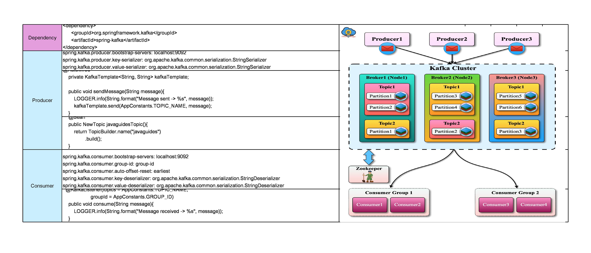

What is Apache Kafka?
Apache Kafka is an open-source distributed event streaming platform used by thousands of companies for high-performance data pipelines, streaming analytics, data integration, and mission-critical applications.
Apache Kafka Core Concepts
We will discuss following Apache Kafka core concepts:
1. Kafka Cluster2. Kafka Broker
3. Kafka Producer
4. Kafka Consumer
5. Kafka Topic
6. Kafka Partitions
7. Kafka Offsets
8. Kafka Consumer Group
Let's begin with Kafka cluster.
1. Kafka Cluster
Since Kafka is a distributed system, it acts as a cluster. A Kafka cluster consists of a set of brokers. A cluster has a minimum of 3 brokers
The following diagram shows Kafka cluster with three Kafka brockers:

2. Kafka Broker
The broker is the Kafka server. It's just a meaningful name given to the Kafka server. And this name makes sense as well because all that Kafka does is act as a message broker between producer and consumer.
The producer and consumer don't interact directly. They use the Kafka server as an agent or a broker to exchange messages.
The following diagram shows a Kafka broker, it acts as an agent or broker to exchange messages between Producer and Consumer:

3. Kafka Producer
Producer is an application that sends messages. It does not send messages directly to the recipient. It sends messages only to the Kafka server.
The following diagram shows Producer sends messages directly to Kafka broker:
4. Kafka Consumer
Consumer is an application that reads messages from the Kafka server.
If producers are sending data, they must be sending it to someone, right? The consumers are the recipients. But remember that the producers don't send data to a recipient address. They just send it to the Kafka server.
Anyone who is interested in that data can come forward and take it from the Kafka server. So, any application that requests data from a Kafka server is a consumer, and they can ask for data sent by any producer provided they have permission to read it.
The following diagram shows Producer sends messages directly to the Kafka broker and the Consumer consumes or reads messages from the Kafka broker:
5. Kafka Topic
We learned that producer sends data to the Kafka broker. Then a consumer can ask for data from the Kafka broker. But the question is, Which data? We need to have some identification mechanism to request data from a broker. There comes the Kafka topic.
- Topic is like a table in a database or folder in a file system.
- Topic is identified by a name.
- You can have any number of topics.
The following diagram shows two Topics are created in a Kafka broker:

6. Kafka Partitions
Kafka topics are divided into a number of partitions, which contain records in an unchangeable sequence.
Kafka Brokers will store messages for a topic. But the capacity of data can be enormous and it may not be possible to store in a single computer. Therefore it will be partitioned into multiple parts and distributed among multiple computers since Kafka is a distributed system.
The following diagram shows Kafka's topic is further divided into a number of partitions:

7. Kafka Offsets
Offset is a sequence of ids given to messages as they arrive at a partition. Once the offset is assigned it will never be changed. The first message gets an offset zero. The next message receives an offset one and so on.

8. Kafka Consumer Group
A consumer group contains one or more consumers working together to process the messages.

Spring Boot Kafka Producer and Consumer Example
Kafka Cheat Sheet
In this section of the tutorial, we will learn how to create Kafka Producer and Consumer in Spring Boot Kafka project.
The Spring Team provides Spring for Apache Kafka dependency to work with the development of Kafka-based messaging solutions.
In this tutorial, we use Kafka as a messaging system to send messages between Producers and Consumers.
1. Install and Setup Apache Kafka
1. Download Kafka from the official website at https://kafka.apache.org/downloads
2. Extract Kafka zip in the local file system
Run the following commands in order to start all services in the correct order:
3. Start Zookeeper service.
Use the below command to start the Zookeeper service:
# Start the ZooKeeper service
# Note: Soon, ZooKeeper will no longer be required by Apache Kafka.
$ bin/zookeeper-server-start.sh config/zookeeper.properties
4. Start Kafka Broker
Open another terminal session and run the below command to start the Kafka broker:
# Start the Kafka broker service
$ bin/kafka-server-start.sh config/server.properties
Once all services have successfully launched, you will have a basic Kafka environment running and ready to use.
2. Create and Setup Spring Boot Project in IntelliJ
Create a Spring boot project using https://start.spring.io/
Add dependencies:
<dependency>
<groupId>org.springframework.boot</groupId>
<artifactId>spring-boot-starter-web</artifactId>
</dependency>
<dependency>
<groupId>org.springframework.kafka</groupId>
<artifactId>spring-kafka</artifactId>
</dependency>
Import in IntelliJ and run the spring boot application
3. Configure Kafka Producer and Consumer in an application.properties File
In the application.properties file, add Kafka broker address as well as Consumer and Producer related configuration.
Open the application.properties file and the following content to it:
spring.kafka.consumer.bootstrap-servers: localhost:9092
spring.kafka.consumer.group-id: group-id
spring.kafka.consumer.auto-offset-reset: earliest
spring.kafka.consumer.key-deserializer: org.apache.kafka.common.serialization.StringDeserializer
spring.kafka.consumer.value-deserializer: org.apache.kafka.common.serialization.StringDeserializer
spring.kafka.producer.bootstrap-servers: localhost:9092
spring.kafka.producer.key-serializer: org.apache.kafka.common.serialization.StringSerializer
spring.kafka.producer.value-serializer: org.apache.kafka.common.serialization.StringSerializer
Let's understand the above spring boot provided Kafka properties:
spring.kafka.consumer.group-id - specifies a unique string that identifies the consumer group this consumer belongs to.
spring.kafka.consumer.auto-offset-reset property - specifies what to do when there is no initial offset in Kafka or if
the current offset does not exist anymore on the server (e.g. because that data has been deleted):
-
earliest: automatically reset the offset to the earliest offset
- latest: automatically reset the offset to the latest offset
- none: throw an exception to the consumer if no previous offset is found for the consumer’s group
- anything else: throw an exception to the consumer.
4. Create Kafka Topic
To create a topic on startup, add a bean of type NewTopic. If the topic already exists, the bean is ignored. We will use the topic name "javaguides" in this example.
Let's create a KafkaTopicConfig file and add the following content:
package net.javaguides.springbootkafka;
import org.apache.kafka.clients.admin.NewTopic;
import org.springframework.context.annotation.Bean;
import org.springframework.context.annotation.Configuration;
import org.springframework.kafka.config.TopicBuilder;
@Configuration
public class KafkaTopicConfig {
@Bean
public NewTopic javaguidesTopic(){
return TopicBuilder.name("javaguides")
.build();
}
}
5. Create Kafka Producer
Creating a producer will write our messages on the topic.
KafkaTemplate
Well, Spring boot provides an auto-configuration for Spring’s KafkaTemplate so you can autowire it directly in your own beans.
For example:
package net.javaguides.springbootkafka.kafka;
import net.javaguides.springbootkafka.utils.AppConstants;
import org.apache.kafka.clients.admin.NewTopic;
import org.slf4j.Logger;
import org.slf4j.LoggerFactory;
import org.springframework.beans.factory.annotation.Autowired;
import org.springframework.kafka.core.KafkaTemplate;
import org.springframework.stereotype.Service;
@Service
public class KafkaProducer {
private static final Logger LOGGER = LoggerFactory.getLogger(KafkaProducer.class);
@Autowired
private KafkaTemplate<String, String> kafkaTemplate;
public void sendMessage(String message){
LOGGER.info(String.format("Message sent -> %s", message));
kafkaTemplate.send(AppConstants.TOPIC_NAME, message);
}
}
Create a utils package and within this package create AppConstants with the following content:
package net.javaguides.springbootkafka.utils;
public class AppConstants {
public static final String TOPIC_NAME = "javaguides";
public static final String GROUP_ID = "group_id";
}
KafKaProducer class uses KafkaTemplate to send messages to the configured topic name.
6. Create REST API to Send Message
Create controller package, within controller package create KafkaProducerController with the following content to it:
package net.javaguides.springbootkafka;
import net.javaguides.springbootkafka.kafka.KafkaProducer;
import org.springframework.http.ResponseEntity;
import org.springframework.web.bind.annotation.*;
@RestController
@RequestMapping("/api/v1/kafka")
public class KafkaProducerController {
private KafkaProducer kafkaProducer;
public KafkaProducerController(KafkaProducer kafkaProducer) {
this.kafkaProducer = kafkaProducer;
}
@GetMapping("/publish")
public ResponseEntity<String> publish(@RequestParam("message") String message){
kafkaProducer.sendMessage(message);
return ResponseEntity.ok("Message sent to kafka topic");
}
}
See Topic Messages via Command Line:
bin/kafka-console-consumer.sh --topic javaguides --from-beginning --bootstrap-server localhost:9092
Make sure to change the topic name. In our case "javaguides" is the topic name.
7. Create Kafka Consumer
Kafka Consumer is the service that will be responsible for reading messages and processing them according to the needs of your own business logic.
To set it up, enter the following:
package net.javaguides.springbootkafka.kafka;
import net.javaguides.springbootkafka.utils.AppConstants;
import org.slf4j.Logger;
import org.slf4j.LoggerFactory;
import org.springframework.kafka.annotation.KafkaListener;
import org.springframework.stereotype.Service;
@Service
public class KafKaConsumer {
private static final Logger LOGGER = LoggerFactory.getLogger(KafKaConsumer.class);
@KafkaListener(topics = AppConstants.TOPIC_NAME,
groupId = AppConstants.GROUP_ID)
public void consume(String message){
LOGGER.info(String.format("Message received -> %s", message));
}
}
Here, we told our method void to consume (String message) to subscribe to the user’s topic and just emit every message to the application log. In your real application, you can handle messages the way your business requires you to.
KafkaListener endpoint:
@KafkaListener(topics = AppConstants.TOPIC_NAME,
groupId = AppConstants.GROUP_ID)
public void consume(String message){
LOGGER.info(String.format("Message received -> %s", message));
}
8. Demo